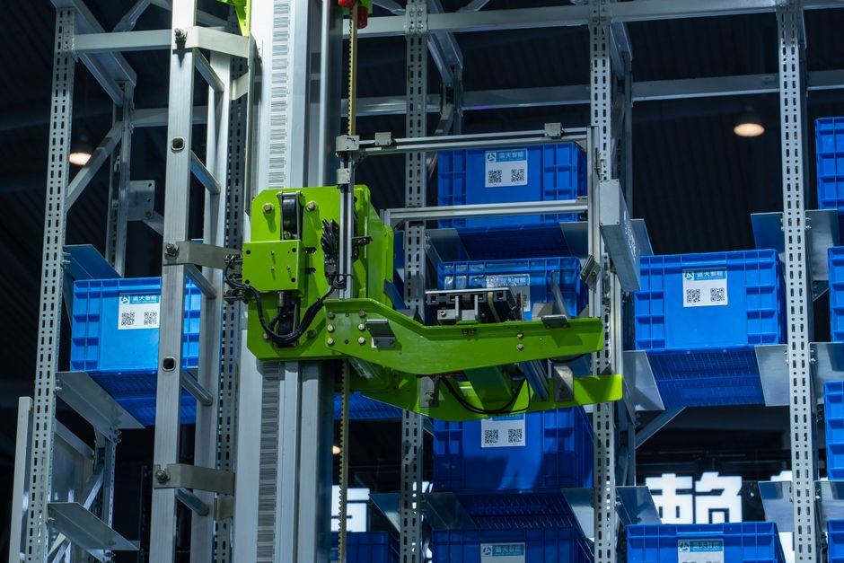

Imagine a world where your online order, from a new book to your favourite gadget, arrives at your doorstep incredibly fast. What's the secret behind this lightning-speed delivery? It's not magic, but a fascinating revolution happening behind the scenes in massive warehouses and logistics hubs, powered by an army of intelligent machines: warehouse and logistics robots! These incredible robots are transforming how goods are stored, sorted, and shipped, making the entire process faster, safer, and more efficient than ever before. For us in India, with our booming e-commerce and rapidly growing economy, understanding these automated marvels isn't just interesting – it's essential for shaping our future.
What Exactly Are Warehouse and Logistics Robots?
At their core, warehouse and logistics robots are autonomous or semi-autonomous machines designed to perform tasks within a storage facility or supply chain. Think of them as tireless, precise workers who never get bored, never get tired, and can operate 24/7. Their job ranges from simply moving items from one place to another, to picking individual products, to even conducting inventory checks from high above the warehouse floor. They are the backbone of modern fulfillment centres, ensuring that the right product reaches the right customer at the right time.
Why Do We Need These Robotic Helpers?
The rise of e-commerce has dramatically changed consumer expectations. Everyone wants their orders delivered quickly, accurately, and often with free shipping. Meeting these demands manually in vast warehouses can be incredibly challenging, prone to errors, and physically demanding for human workers. This is where robots step in, offering a multitude of benefits:
- Increased Efficiency and Speed: Robots can work continuously without breaks, move faster than humans in many tasks, and follow optimized paths to reduce travel time, dramatically speeding up order fulfillment.
- Enhanced Accuracy: With advanced sensors and programming, robots make fewer mistakes than humans, leading to fewer mis-shipments, damaged goods, and lost inventory.
- Improved Safety: Many warehouse tasks involve lifting heavy objects, operating machinery, or working in hazardous environments. Robots can take over these dangerous jobs, reducing the risk of injuries to human workers.
- Optimized Space Utilization: Automated Storage and Retrieval Systems (AS/RS) can build upwards, utilizing vertical space much more effectively than traditional manual warehouses, allowing more products to be stored in the same footprint.
- Scalability: As demand fluctuates (e.g., during festive seasons like Diwali or major sales events), more robots can be deployed or programmed to handle increased workloads without extensive hiring and training.
- Addressing Labour Shortages: In many regions, finding sufficient labour for warehouse operations can be a challenge. Robots help bridge this gap.
Types of Robots Revolutionizing Logistics
The world of warehouse robotics is diverse, with different types of robots specialized for specific tasks:
1. Automated Guided Vehicles (AGVs) & Autonomous Mobile Robots (AMRs)
- AGVs: These are like trains on a track. They follow predefined routes, often marked by wires embedded in the floor, magnetic tape, or optical sensors following painted lines. They're great for repetitive, high-volume material transport between fixed points.
- AMRs: Think of AMRs as the smarter, more flexible cousins of AGVs. Equipped with advanced sensors (like LiDAR, cameras, and ultrasonic sensors) and sophisticated mapping software, AMRs can navigate dynamically. They understand their environment, detect obstacles, and plot the most efficient path in real-time without needing fixed routes. They are commonly used for transporting shelves, pallets, or individual items to human pickers, or for direct pick-and-place operations.
2. Automated Storage and Retrieval Systems (AS/RS)
These are large, complex systems designed to automatically store and retrieve items from high-density storage racks. They often consist of cranes, shuttles, and robotic manipulators that move along aisles to deposit or extract goods. AS/RS systems are incredibly efficient at maximizing storage space and providing rapid access to a vast inventory.
3. Robotic Arms (Pick-and-Place Robots)
Just like the robotic arms you might see in car manufacturing, these robots are designed for precision. In warehouses, they are equipped with advanced grippers (suction cups, multi-finger grippers) and vision systems to identify, pick, and place individual items from bins or conveyor belts into order boxes. They are crucial for tasks that require high accuracy and speed, especially for small or irregularly shaped items.
4. Drones for Inventory Management
While not directly involved in moving goods, drones are emerging as valuable tools for inventory management. Equipped with cameras and barcode scanners, they can fly through warehouses, quickly scanning shelves and updating inventory records, especially in hard-to-reach areas. This significantly reduces the time and effort required for manual inventory counts.
How Do These Robots "Think" and Move?
The intelligence behind these robots comes from a combination of hardware and software:
- Sensors: Robots rely on a variety of sensors to perceive their environment. These include cameras for vision, LiDAR for mapping and distance measurement, ultrasonic sensors for proximity detection, and encoders for precise movement control.
- Navigation & Mapping: Using data from their sensors, robots create internal maps of the warehouse. Algorithms then help them plan the most efficient paths, avoid obstacles, and ensure they reach their destination accurately.
- Artificial Intelligence (AI) & Machine Learning (ML): AI and ML algorithms enable robots to learn from their experiences, make decisions, optimize their movements over time, and even identify and handle different types of products.
- Communication: Robots constantly communicate with a central control system (often called a Warehouse Management System or WMS) and sometimes with each other. This allows for coordinated movement, task assignment, and real-time updates on inventory and order status.
Here's a simple Python example that conceptually shows how an AMR might plan a path and detect an 'obstacle':
# A very basic conceptual Python example for an Autonomous Mobile Robot (AMR)
# This simulates movement in a grid and a simple 'obstacle detection' idea.
class AMR:
def __init__(self, start_x, start_y):
self.x = start_x
self.y = start_y
self.status = "Idle"
print(f"AMR initialized at coordinates ({self.x}, {self.y}).")
def move_to(self, target_x, target_y):
if self.status != "Idle":
print("AMR is busy. Cannot accept new command.")
return
self.status = "Moving"
print(f"AMR planning path from ({self.x}, {self.y}) to ({target_x}, {target_y})...")
# Simulate movement step-by-step
while self.x != target_x or self.y != target_y:
# Simulate basic pathfinding (move closer to target in X then Y)
if self.x < target_x:
self.x += 1
elif self.x > target_x:
self.x -= 1
if self.y < target_y:
self.y += 1
elif self.y > target_y:
self.y -= 1
print(f" Moving to ({self.x}, {self.y})")
# Simulate a random chance of detecting an obstacle
import random
if random.random() < 0.15: # 15% chance of obstacle detection
print(" ALERT: Obstacle detected! Pausing and re-evaluating path...")
# In a real AMR, complex re-routing algorithms would engage here.
# For this simple example, we'll just acknowledge and continue.
# A real robot might wait, find an alternate route, or request help.
# For now, let's just break the loop to show it stops.
self.status = "Obstacle Detected"
break # Stop movement for this simulation step
if self.x == target_x and self.y == target_y:
print(f"AMR arrived at destination ({self.x}, {self.y}).")
self.status = "Idle"
else:
print(f"AMR stopped due to obstacle at ({self.x}, {self.y}). Current status: {self.status}")
# --- Let's run a simulation! ---
my_first_robot = AMR(0, 0)
my_first_robot.move_to(5, 3)
print("\n--- Another movement attempt ---")
my_second_robot = AMR(1, 1)
my_second_robot.move_to(2, 5)
This simple code demonstrates the idea of a robot having a current position, a target, and taking steps to reach it, with a simulated 'obstacle detection' event that could alter its path in a real-world scenario. Real-world robot code is vastly more complex, involving advanced algorithms for navigation, object recognition, and safety.
Amazon's Robot Army: A Prime Example
Perhaps the most famous example of warehouse robotics in action is Amazon's use of Kiva Systems (now Amazon Robotics). After acquiring Kiva in 2012, Amazon deployed thousands of small, orange robots in its fulfillment centres. These robots don't just move items; they lift entire shelves of products and bring them directly to human workers who then pick the required items. This "goods-to-person" approach dramatically reduces the time human workers spend walking across vast warehouses, leading to unprecedented levels of efficiency and speed in order fulfillment.
"The greatest value of a robot is its ability to handle repetitive, dangerous, or dirty tasks, freeing humans to focus on more complex and creative problem-solving and supervision." - Industry Experts
The Future is Automated: Impact and Opportunities for India
The journey of warehouse robotics is far from over. We can expect even more sophisticated robots, improved AI, and seamless human-robot collaboration (cobots) in the future. Robots will become more adept at handling delicate items, navigating unstructured environments, and performing a wider range of tasks.
For India, this automation wave presents both challenges and immense opportunities. With our booming e-commerce market and a strong talent pool in engineering and software development, India is uniquely positioned to become a leader not just in adopting these technologies but also in developing and manufacturing them. This will create new job roles in robotics programming, maintenance, data analysis, and system integration, requiring a skilled workforce ready for the future.
Getting Started with Robotics: Your Journey Begins Here!
Are you fascinated by these intelligent machines? The world of robotics is incredibly exciting and accessible. Learning about warehouse robots is a fantastic way to understand real-world applications of STEM (Science, Technology, Engineering, and Mathematics) principles. You can start by:
- Learning programming languages like Python.
- Experimenting with microcontrollers like Arduino or Raspberry Pi.
- Understanding basic electronics and mechanics.
- Exploring online courses and resources on robotics and AI.
- Participating in robotics competitions and workshops.
At MakerWorks, we believe in empowering the next generation of innovators. Understanding how robots are transforming industries like logistics is just the beginning. By diving into the world of robotics, you're not just learning about machines; you're developing critical thinking skills, problem-solving abilities, and a future-proof mindset that will serve you well in any career path you choose.
The next time you click "order" online, take a moment to appreciate the silent, tireless army of robots working behind the scenes. They are not just moving packages; they are building the future of logistics, one automated task at a time. And who knows, perhaps one day, you will be designing the next generation of these incredible machines!